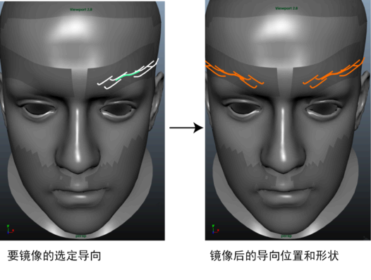

使用添加或移动导向工具移动导向
- 在 XGen 编辑器中，选择此图标
 以激活添加/移动导向工具。
以激活添加/移动导向工具。 - 按住 Ctrl 键并选择导向，然后将导向拖动到所需位置。
删除导向
到
- 选择导向，然后按
 。
。
复制和粘贴导向形状
可以通过使用“复制导向形状”(Copy Guide Shape)和“粘贴导向形状”(Paste Guide Shape)标记菜单选项，来复制导向的形状，并将其粘贴到描述中的其他导向。
也可以使用“复制导向”(Copy Guides)工具。请参见复制导向选项。
若要使用标记菜单来复制和粘贴导向形状，请执行下列操作：
- 右键单击包含要复制的形状的导向，然后从显示的菜单中选择“复制导向形状”(Copy Guide Shape)。
- 按住 Ctrl 键并选择要向其复制形状的导向。
- 单击鼠标右键，然后选择“粘贴导向形状”(Paste Guide Shape)。
此时选定的导向具有粘贴的导向的形状。
镜像导向位置和形状
可以使用“镜像导向”(Mirror Guide)工具，沿多边形网格的 X 轴镜像导向位置和形状。使用此方法可以生成两个对称的基本体区域，如眉毛和中分发型。
- 选择要沿几何体的 X 轴进行镜像的导向。
- 从 XGen 工具栏中，单击
 图标。
图标。 XGen 在相应位置并使用镜像所选导向的形状添加新导向。

增大导向控制顶点数
若要在修饰样条线基本体时创建更复杂、更有趣的形状，可能需要将更多的控制顶点添加到导向。描述中的导向可以具有不同数量的控制顶点。
将控制顶点添加到选定的导向
- 在“大纲视图”(Outliner)中，选择要向其添加 CV 的导向。
- 在 XGen 编辑器中选定描述时，单击“基本体”(Primitives)选项卡。
- 在“导向工具”(Guide Tools)旁边的“基本体属性”(Primitive Attributes)部分中，单击“重建”(Rebuild)。
- 在“重建导向”(Rebuild Guide)窗口中，增大“CV 计数”(CV Count)值，然后单击“确定”(OK)。
Maya 将使用设置的控制顶点数重建选定的导向。